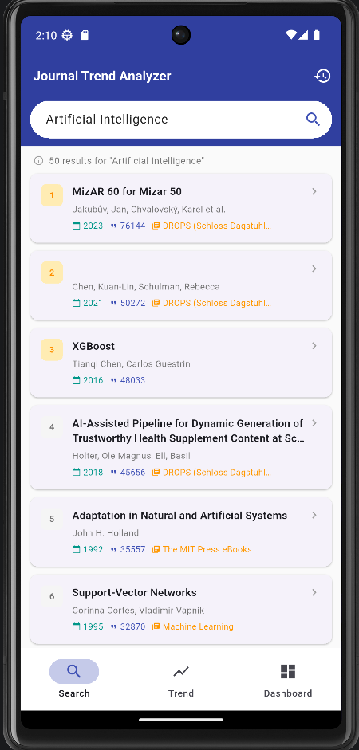
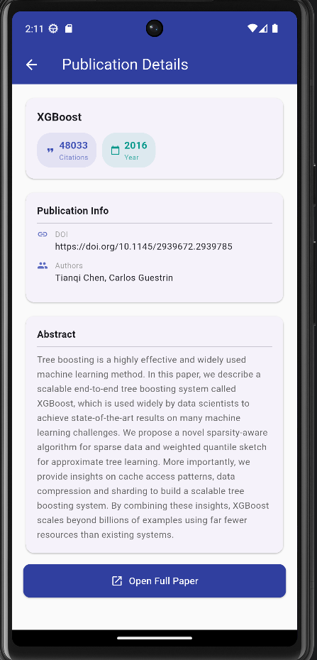
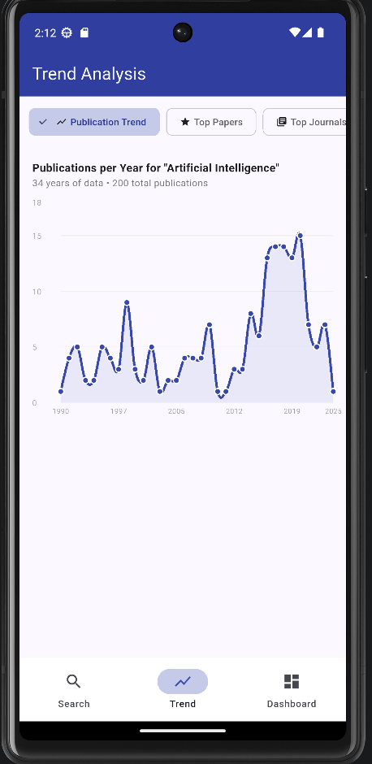
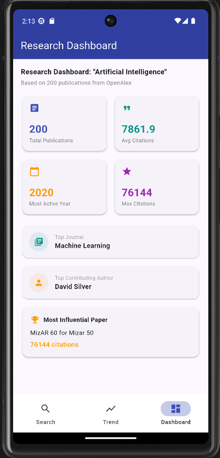
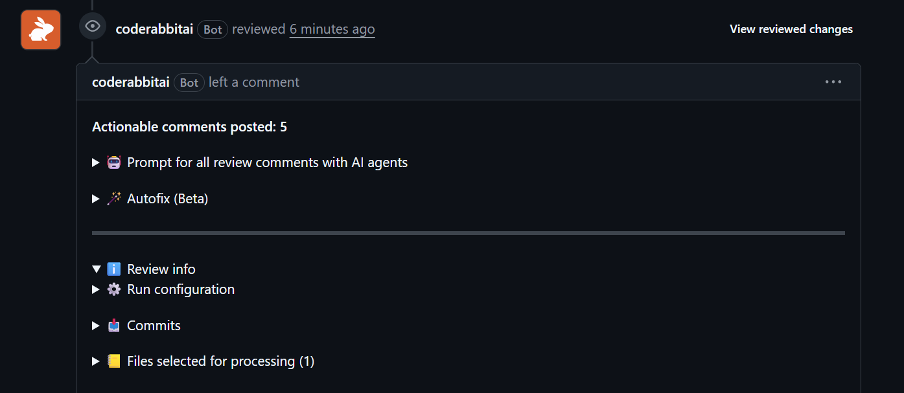
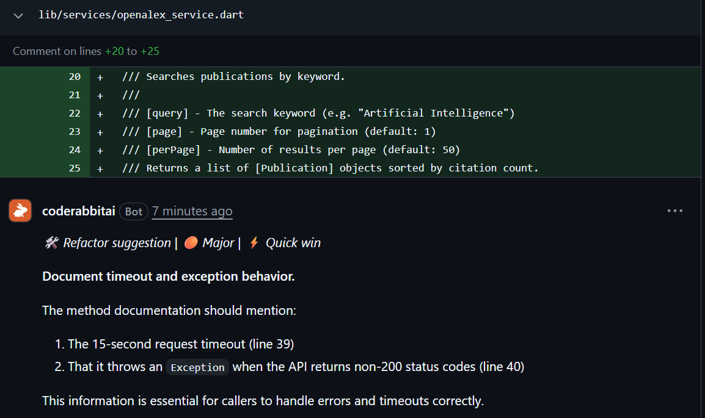
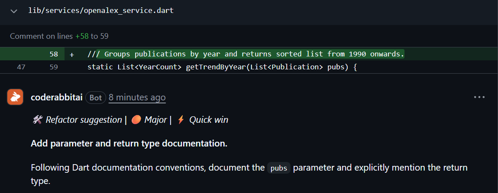
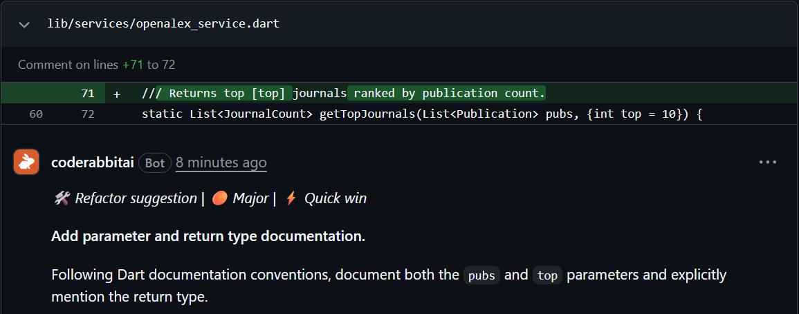

| Student ID | SE180518 |
| Subject | PRM393 – Mobile Programming |
| Assignment | Lab 2 – Journal Trend Analysis |
| Repository | PRM393_Lab2_SE180518 |
| Date | June 2026 |
For this lab, I built a Flutter mobile application called Journal Trend Analyzer that retrieves real scholarly publication data from OpenAlex and visualizes research trends for any topic the user searches.
Research publications are growing rapidly across many disciplines, making it increasingly important to identify emerging topics, influential papers, active researchers, and publication trends. Academic databases such as OpenAlex provide access to large-scale scholarly data that can be used for research analytics and decision support.
The app allows users to search for any research topic — such as Artificial Intelligence, Blockchain, or Cybersecurity — and instantly explore how that topic has evolved over time through interactive charts, rankings, and summary dashboards. All data is fetched live from the OpenAlex REST API without any backend or authentication required.
I chose OpenAlex as the data source because it is completely free, has no API key requirement for basic usage, covers over 250 million publications from global academic sources, and provides a clean and well-documented REST API that works well from a Flutter mobile client.
This assignment helped me practice and apply several key mobile development skills:
RESTful API Integration — I learned how to call an external REST API from a Flutter app, handle HTTP responses, parse complex JSON structures, and deal with real-world edge cases like missing fields and unusual data formats (OpenAlex stores abstracts as an inverted index, not plain text).
Asynchronous Programming — The app heavily uses async/await and Future to handle API calls without blocking the UI. I also implemented background data fetching so that analytics load asynchronously after the search results are already displayed.
State Management — I used the Provider package with ChangeNotifier to manage shared state across multiple screens. This was my first time using Provider in a real project and I found it much cleaner than passing data through constructors.
Data Visualization — I used the fl_chart library to build an interactive line chart showing publication trends over time. This required transforming raw API data into chart-compatible data points.
Clean Architecture — I organized the project into separate layers (models, services, state, screens, widgets) to keep the code maintainable and avoid mixing UI logic with business logic.
The project follows a clean layered architecture with clear separation of concerns between data, logic, and UI:
lib/ ├── models/ │ ├── publication.dart # Publication entity │ └── trend_data.dart # Analytics models ├── services/ │ ├── openalex_service.dart # API calls + analytics │ └── history_service.dart # Search history (SharedPreferences) ├── state/ │ └── search_provider.dart # ChangeNotifier state management ├── screens/ │ ├── splash_screen.dart │ ├── search_screen.dart │ ├── publication_detail_screen.dart │ ├── trend_screen.dart │ └── dashboard_screen.dart ├── widgets/ │ └── loading_widget.dart # LoadingList, EmptyState, ErrorState └── main.dart
Models layer — Pure Dart data classes. Publication represents a single scholarly work. trend_data.dart contains lightweight models for analytics results.
Services layer — OpenAlexService handles all HTTP communication and analytics computation. HistoryService handles local persistence of search history.
State layer — SearchProvider is the single source of truth for all app state, managing the search lifecycle, pagination, background analytics, and search history.
Screens layer — Each screen focuses purely on presentation, reading from SearchProvider but never calling API methods directly.
The application uses the Provider pattern with ChangeNotifier. When a user searches, the provider: sets state to loading → fetches first 50 results → shows results immediately → starts background fetch of up to 200 publications → computes analytics → notifies listeners to update Trend and Dashboard tabs.
Base URL: https://api.openalex.org Endpoint: GET /works
| Parameter | Value | Purpose |
|---|---|---|
| search | user's query | Full-text search across titles and abstracts |
| sort | cited_by_count:desc | Sort by most cited first |
| per_page | 50 | Results per page |
| page | 1, 2, 3... | Pagination support |
| mailto | se180518@fpt.edu.vn | Polite pool for higher rate limits |
One interesting technical challenge was the abstract format. OpenAlex stores abstracts as an inverted index (word → list of positions) rather than plain text. The app reconstructs the original text by reversing this mapping — sorting all word-position pairs by position and joining the words back into a sentence.
The search screen is the entry point of the app. Users can type any research keyword and get results sorted by citation count. Features include:

Figure 5: Search Screen — 50 results for "Artificial Intelligence" sorted by citation count
Tapping any publication card opens a full detail screen showing:

Figure 6: Publication Detail Screen — XGBoost paper with 48,033 citations, DOI, authors, and full abstract
The trend screen provides 4 sub-sections accessible via chip tabs:
Publication Trend Chart — Line chart (fl_chart) showing number of publications per year from 1990 to present. Smooth curved line with filled area below. X-axis shows years, Y-axis shows publication count.
Top Influential Papers — Top 20 papers ranked by citation count (highest to lowest). Shows title, citation count, and year. Tap to view publication details.
Top Research Journals — Top 10 journals ranked by number of publications, with horizontal progress bar showing relative contribution.
Top Contributing Authors — Top 10 authors ranked by number of papers, with progress bar visualization.

Figure 7: Trend Analysis Screen — Publications per year for "Artificial Intelligence" (34 years, 200 publications)
Summary dashboard with key insights about the searched topic:
| Metric | Description |
|---|---|
| Total Publications | Total number of publications analyzed |
| Avg Citations | Average citation count across all publications |
| Most Active Year | Year with the highest publication count |
| Max Citations | Highest single-paper citation count |
| Top Journal | Journal with most publications on the topic |
| Top Author | Author with most publications on the topic |
| Most Influential Paper | Paper with highest citation count |

Figure 8: Research Dashboard — Key metrics for "Artificial Intelligence": 200 publications, avg 7861.9 citations, Most Active Year 2020, Top Journal: Machine Learning
| Package | Version | Purpose |
|---|---|---|
| flutter | 3.44.0 | UI framework |
| provider | 6.1.5 | State management |
| http | 1.6.0 | HTTP client for API calls |
| fl_chart | 0.69.2 | Line chart visualization |
| shared_preferences | 2.5.5 | Local search history storage |
| shimmer | 3.0.0 | Loading skeleton animation |
| url_launcher | 6.3.2 | Open paper URLs in browser |
Android Configuration: minSdk 21 (Android 5.0), targetSdk 34 (Android 14), Internet permission added in AndroidManifest.xml.
CodeRabbit (coderabbit.ai) — an AI-powered automated code review tool that analyzes code for bugs, security issues, performance problems, and code quality improvements.
The review was conducted on Pull Request #4 of the repository. CodeRabbit identified 5 actionable comments in the code.

Figure 1: CodeRabbit review summary — 5 actionable comments found in PR #4
Issue 1: Missing timeout and exception behavior documentation — 🔧 Refactor | 🟠 Major
Detected by: CodeRabbit — lines 20–25 in lib/services/openalex_service.dart
Problem: The searchPublications() method documentation does not mention: (1) the 15-second request timeout, and (2) that it throws an Exception when the API returns non-200 status codes. This information is essential for callers to handle errors and timeouts correctly.
Fix applied: Updated the method docstring to include timeout duration and exception behavior so callers know what to expect when network issues occur.

Figure 2: Issue 1 — Missing timeout and exception documentation in searchPublications()
Issue 2: Missing parameter and return type documentation in getTrendByYear() — 🔧 Refactor | 🟠 Major
Detected by: CodeRabbit — lines 58–59 in lib/services/openalex_service.dart
Problem: The getTrendByYear() method does not follow Dart documentation conventions — the pubs parameter and the return type List<YearCount> are not explicitly documented. This makes it unclear what input is expected and what the caller receives back.
Fix applied: Added @param pubs and @returns documentation following Dart doc conventions.

Figure 3: Issue 2 — Missing parameter documentation in getTrendByYear()
Issue 3: Missing parameter and return type documentation in getTopJournals() — 🔧 Refactor | 🟠 Major
Detected by: CodeRabbit — lines 71–72 in lib/services/openalex_service.dart
Problem: The getTopJournals() method is missing documentation for both the pubs and top parameters, as well as the return type. Following Dart documentation conventions, all parameters and return values should be documented for maintainability.
Fix applied: Added complete parameter and return type documentation to getTopJournals() and similarly to getTopAuthors() which had the same issue.

Figure 4: Issue 3 — Missing parameter documentation in getTopJournals()
SplashScreen (2s animated intro)
└── HomeShell (BottomNavigationBar)
├── Tab 0: SearchScreen
│ └── PublicationDetailScreen
├── Tab 1: TrendScreen
│ ├── Publication Trend Chart
│ ├── Top Papers list
│ ├── Top Journals list
│ └── Top Authors list
└── Tab 2: DashboardScreen
Material 3 with Indigo color scheme — Indigo conveys professionalism and academic credibility, appropriate for a research tool. Material 3 provides modern, accessible UI components.
Bottom Navigation Bar with IndexedStack — Standard mobile navigation pattern. Using IndexedStack ensures each tab's state is preserved when switching — search results don't reset when the user goes to Trend tab and comes back.
Shimmer loading — Instead of a simple spinner, shimmer skeleton screens give users a preview of the layout while data loads, making the app feel faster and more polished.
Rank badges on search results — Top 3 results get a gold badge to draw attention to the most highly cited papers, helping users quickly identify influential work.
Progress bars for rankings — For journals and authors, horizontal progress bars make it visually obvious how dominant the top entry is compared to others — more intuitive than plain numbers.
Challenge 1: Abstract inverted index format
When I first tested the API, I expected abstracts to be plain text strings. Instead, OpenAlex returns them as a dictionary mapping each word to a list of its position indices. I had to write a reconstruction algorithm that reverses this format — collecting all word-position pairs, sorting by position, and joining the words back into a sentence.
Challenge 2: Two-stage data loading
The app needs fast search results AND comprehensive analytics. Fetching all 200 publications at once before showing anything would feel too slow. My solution was to show the first 50 results immediately, then fetch more in the background for analytics. The tricky part was coordinating the loading states across the Trend and Dashboard tabs.
Challenge 3: fl_chart configuration
Getting the line chart to look correct with proper axis labels required reading through the fl_chart documentation carefully. OpenAlex data can span many years, so the x-axis needed dynamic interval calculation to avoid overlapping labels.
Challenge 4: Pagination state management
When implementing pagination, I had to be careful not to mix the paginated _results list (for the search tab) with _allPubs (for analytics). These serve different purposes and needed to be managed independently in SearchProvider.
Given more time, several enhancements would make the app more useful:
The Journal Trend Analyzer successfully meets all the functional and technical requirements of Lab 2. The app is built with Flutter and Dart, consumes the OpenAlex REST API directly from the mobile client without any backend, handles JSON data processing and asynchronous state management, visualizes data through interactive charts, and runs on Android.
The project helped me gain hands-on experience with API integration, Provider state management, data visualization with fl_chart, and organizing a Flutter project with a clean layered architecture. The AI-assisted code review with CodeRabbit caught real issues that I was able to address before submission.
The most challenging and interesting part of this lab was designing the two-stage loading system — showing fast initial results while computing deeper analytics in the background. This kind of UX consideration makes the difference between an app that feels slow and one that feels responsive.